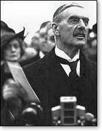
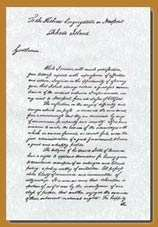

par Charles Krauthammer (1998) Cet article a 24 ans d'âge. La raison pour laquelle j'attire de nouveau l'attention sur lui, à près d'une génération de distance par rapport aux événements sur lesquels méditait alors l'auteur en les comparant à ceux qu'avait subis la nation juive, au cours de sa longue et dramatique histoire, est l'analogie que je vois entre la cause qu'assigne Krauthammer au sort multiséculaire du peuple juif, et celle de l'agression récente de l'Ukraine par la Russie de Poutine, à savoir, le fait d'être une "petite nation", livrée au bon plaisir de ses agresseurs, tandis que les témoins, se taisent, tétanisés par la crainte qu'il leur arrive la même chose s'ils osaient intervenir. Le Dr Charles Krauthammer, psychiatre, devenu un remarquable éditorialiste politique, est décédé le 21 juin 2018. Celles et ceux qui maîtrisent l’anglais peuvent consulter sa notice nécrologique1. Pour celles et ceux qui, comme moi admirent profondément sa pensée et son talent, je remets en ligne ici un article que j’affectionne tout particulièrement.
Original anglais: “At Last Zion: Israel and the Fate of the Jews”. Traduction française de Nathalie Lerner, révisée par Menahem Macina. Mise en page, notes et illustrations de Menahem Macina.
1. Un petit État Des troupes allemandes défilent sur la place de la ville de Friedland le 3 octobre 1938. Wide World Photo.
Milan Kundera a défini un jour un petit État comme étant « un État dont l'existence même pourrait être remise en question à tout instant; un petit État peut disparaître, et il le sait »2. Les États-Unis ne sont pas un 'petit État'. Le Japon non plus. Ni même la France. Ces nations peuvent subir des défaites. Elles peuvent même être envahies. Mais elles ne peuvent pas disparaître. La Tchécoslovaquie de Kundera pouvait disparaître, et ce fut même le cas, en une occasion3.
La Tchécoslovaquie d'avant-guerre est une petite nation paradigmatique: une démocratie libérale créée sur les cendres de la guerre par un monde déterminé à laisser les petites nations vivre librement; menacée par la convoitise et la taille importante d'un voisin en expansion; fatalement compromise par une lassitude grandissante de la part de l'Ouest à propos d'«une querelle dans un pays lointain - un pays dont nous ignorons tout»; laissée morcelée et sans défense, succombant finalement à la conquête. Quand Hitler est entré dans Prague, en mars 1939, il a déclaré: « La Tchécoslovaquie a cessé d'exister ».

“How horrible, fantastic, incredible, it is that we should be digging trenches and trying on gas-masks here because of a quarrel in a far-away country between people of whom we know nothing!”
(C'est une chose ô combien fantastique, incroyable, que nous devions creuser des tranchées et essayer des masques à gaz à cause d'une querelle qui a lieu dans un pays éloigné entre deux peuples dont nous ne savons rien!)4
Israël est également une petite nation. Cela ne signifie pas que son destin soit de disparaître. Mais ce pourrait l’être. Qui plus est, par sa vulnérabilité face à l’anéantissement, Israël n'est pas uniquement une petite nation. Israël est la seule petite nation - la seule, point! - dont les voisins déclarent publiquement que son existence même est un affront au droit, à la morale et à la religion, et qui font de son anéantissement un objectif national explicite. Et cet objectif n'est pas une simple déclaration d'intention. L'Iran, la Libye, et l'Iraq mènent une politique étrangère qui vise au meurtre des Israéliens et à la destruction de leur État. Ils choisissent leurs alliés (Hamas, Hezbollah) et développent leurs armements (bombes- suicide, gaz toxiques, anthrax, missiles nucléaires) conformément à cette politique. Des pays aussi éloignés que la Malaisie n'autorisent pas la présence d'un représentant d'Israël sur leur sol, allant jusqu'à interdire la projection du film "La Liste de Schindler", de peur qu'il n'engendre de la « sympathie pour Sion ». D'autres sont plus circonspects dans leurs déclarations. La destruction n'est plus l'objectif unanime de la Ligue Arabe, comme cela a été le cas pendant les trente années qui ont précédé Camp David. La Syrie, par exemple, ne le dit plus de façon explicite. Cependant, la Syrie détruirait Israël demain, si elle en avait les moyens. (Sa retenue actuelle sur le sujet est largement due à son besoin de liens avec les Etats-Unis d'après la guerre froide). Même l'Égypte, première à avoir fait la paix avec Israël, et prétendu modèle de « faiseur de paix », s'est dotée d'une grande armée équipée de matériel américain, qui effectue des exercices militaires très clairement conçus pour combattre Israël. Son exercice "géant", Badr 96, par exemple, le plus grand mené depuis la guerre de 1973, simulait des traversées du canal de Suez.
était la conséquence directe des accords de Munich, signés le 30 septembre 1938, par Hitler, Chamberlain et Daladier. Par ces accords, un tiers du territoire du pays était cédé à l'Allemagne nazie. Voir l'Encyclopédie multimédia de la Shoah, Adolf Hitler passe ses troupes en revue dans le château de Prague le jour de l'occupation de la ville, le 15 mars 1939. Czechoslovak News Agency.
Et même l'OLP, obligée de reconnaître ostensiblement l'existence d'Israël dans les accords d'Oslo de 1993, est toujours régie par une charte nationale qui, dans au moins quatorze passages, appelle à l'éradication d'Israël. Le fait qu'après cinq ans5 et quatre promesses explicites d'amender cette charte, elle reste intacte, est un signe qui montre à quel point le rêve de faire disparaître Israël reste profondément ancré dans l'inconscient collectif arabe6. Lors d'un discours prononcé le 26 octobre 2005 devant un public de quatre mille étudiants radicaux, à l'occasion d'une conférence intitulée "Le monde sans le sionisme"), le Président iranien, Mahmoud Ahmadinejad, a déclaré:
« Comme l'a dit l'imam (Khomeiny), Israël doit être rayé de la carte… Les dirigeants de la nation musulmane qui reconnaîtront Israël brûleront dans les flammes de la colère de leur propre peuple ».
La perspective de la disparition d'Israël pose problème à cette génération. Pendant 50 ans, Israël « a fait partie des meubles ». La plupart des gens ne se souviennent pas d'avoir vécu dans un monde où Israël n'existerait pas. Pourtant ce sentiment de « permanence » a plus d'une fois été mis à rude épreuve - pendant les premiers jours de la guerre du Kippour, lorsqu'il semblait qu'Israël allait être envahi, ou encore durant les quelques semaines de mai et début juin 1967, quand Nasser instaura un blocus du détroit de Tiran et fit déferler 100 000 soldats dans le Sinaï pour rejeter les Juifs à la mer. Pourtant, la victoire étourdissante d'Israël, en 1967, sa supériorité en armes conventionnelles, son succès dans chaque guerre durant laquelle son existence était en jeu, ont engendré l'autosatisfaction. L'idée même de la non-permanence d'Israël paraissait ridicule. Israël, écrivait un intellectuel de la diaspora, « est fondamentalement indestructible. Yitzhak Rabin le savait. Les dirigeants arabes sur le Mont Herzl (lors de l'enterrement de Rabin) le savaient. Seuls les ‘saints’ de la droite, voleurs de terres et dégainant à toute occasion, l'ignorent. Ils sont animés par l'espoir de la catastrophe, l'exaltation d'assister à la fin ». L'exaltation n'était pas exactement la sensation éprouvée par les Israéliens lorsque, pendant la guerre du Golfe, ils durent s'enfermer dans des pièces hermétiquement isolées et porter des masques à gaz pour se protéger d'une destruction de masse – et ce pour une guerre dans laquelle Israël n'était même pas impliqué. Il y eut alors une vague de peur, de terreur, d'impuissance, ces sentiments juifs ancestraux que la mode post-sioniste d'aujourd'hui juge anachroniques, si ce n'est réactionnaires. Mais la volonté ne change pas la réalité. La guerre du Golfe a rappelé, même aux plus optimistes, qu'à l'époque des armes chimiques, des missiles, et des bombes nucléaires, époque dans laquelle aucun pays n'est à l'abri d'armes de destruction de masse, Israël, avec sa population compacte et son territoire réduit, est particulièrement exposé à l'anéantissement. Israël n'est pas au bord du gouffre. Il n'est pas au bord du précipice. Nous ne sommes ni en 1948, ni en 1967 ou 1973. Et il le sait. Il peut sembler étrange de commencer une étude sur la signification d'Israël et de l'avenir des Juifs en envisageant sa fin. Mais cela contribue à concentrer l'esprit. Et cela permet de mettre les enjeux en évidence. Les enjeux ne pourraient pas être plus élevés. J'affirme que l'existence et la survie du peuple juif sont directement liées à l'existence et à la survie d'Israël. Ou encore, pour exprimer cette thèse sur un mode négatif, que la fin d'Israël signifierait la fin du peuple juif. Le peuple juif a survécu à la destruction et à l'exil des Babyloniens, en 586 avant l'ère chrétienne. Il a survécu à la destruction et à l'exil des Romains, en 70 de notre ère, et pour la dernière fois en 132. Mais il ne pourrait survivre à une autre destruction, ni à un autre exil. Ce troisième État – l'Israël moderne –, né il y a de cela [74] ans, est le dernier. Le retour à Sion est maintenant le principal drame du peuple Juif. Ce qui a commencé comme une expérience constitue dorénavant le cœur même du peuple juif - son centre culturel, spirituel, et psychologique, et cet État est devenu également son centre démographique. Israël est la clé de voûte. C'est sur lui que reposent les espoirs - l'unique espoir même - de continuité et de survie des Juifs.
En 1950, il y avait 5 millions de Juifs aux États-Unis. En 1990, leur nombre dépassait à peine les 5,5 millions. Durant ces décennies, la population globale des États-Unis a augmenté de 65%. Celle des Juifs stagne. En fait, durant le dernier demi-siècle, le pourcentage de Juifs au sein de la population américaine est passé de 3 à 2. Et aujourd'hui, se précise un déclin, non pas relatif mais absolu. Ce qui a maintenu la population juive et son niveau actuel a été tout d'abord le « Baby boom » d'après- guerre, puis l'arrivée de 400 000 Juifs, principalement de l'Union soviétique. Mais le « baby boom » est terminé. Et l'immigration russe touche à sa fin. Le nombre de Juifs qui se trouvent aux États-Unis n'est pas illimité. Si nous laissons de côté ces anomalies historiques, la population juive américaine est moins importante aujourd'hui que ce qu'elle était en 1950. Elle sera certainement encore plus faible dans l'avenir. En fait, elle est aujourd'hui vouée à un déclin catastrophique. Steve Bayme, directeur du Jewish Communal Affairs, prévoit carrément que, d'ici 20 ans, la population juive aura baissé jusqu'à 4 millions, une perte d'environ 30%. Et qu'en sera-t-il dans 20 ans? Une projection de quelques décennies de plus annonce un avenir encore plus effrayant. Comment une communauté peut-elle se dépeupler dans des conditions aussi favorables que celles des États-Unis? – La raison est simple: fertilité basse et phénomène endémique de mariages mixtes. Le taux de fertilité, chez les Juifs américains, est de 1, 6 enfants par femme. Le taux de remplacement (c'est-à-dire le taux nécessaire pour que la population reste constante) est de 2, 1. Le taux actuel est donc inférieur de 20% à ce qui serait nécessaire pour une progression nulle. Ainsi le taux de fertilité, à lui seul, entraînerait une baisse de 20% à chaque génération. En trois générations, la population diminuerait de moitié. Le faible taux de natalité ne découle pas d'une aversion particulière des femmes juives à l'égard des enfants. C'est tout simplement un cas flagrant du phénomène bien connu du déclin du taux de naissance, proportionnel à l'augmentation du niveau d'éducation et du niveau socio-économique. Des femmes éduquées, à la carrière brillante, ont tendance à se marier tard et à avoir moins de bébés. Ajoutons maintenant un second facteur: les mariages mixtes. Aux États-Unis, aujourd'hui, les Juifs se marient plus avec des chrétiens qu'avec des Juifs. Le taux de mariages mixtes est de 52%. (Un même). En 1970 le taux était de 8%.
Plus important encore pour la continuité juive est l'identité finale des enfants nés de ces mariages. Or, seul un sur quatre est élevé dans la tradition juive. Ainsi, deux tiers des mariages juifs produisent des enfants dont les trois-quarts sont perdus pour le peuple juif. À lui seul, le taux de mariages mixtes causerait un déclin de 25% de la population juive à chaque génération [...] A ce rythme, la moitié des Juifs disparaîtraient en deux générations. Combinez maintenant les effets de la fertilité et des mariages mixtes et faites la supposition, très optimiste, que chaque enfant élevé dans la tradition juive grandira en conservant son identité juive (c'est-à-dire avec un coefficient zéro de perte). Vous commencez avec 100 Juifs américains; il vous en reste 60. En une génération, plus d'un tiers aura disparu. En deux générations seulement, 2 sur 3 se seront volatilisés. On peut parvenir à la même conclusion par un autre raisonnement (en ne prenant pas du tout en compte les mariages mixtes). Un sondage du Los Angeles Times, effectué auprès des Juifs américains, en mars 1998, posait une question simple: élevez-vous vos enfants dans la tradition juive? Seuls 70% ont répondu par l'affirmative. Une population dont le taux de remplacement biologique est de 80% et le taux de remplacement culturel de 70% est vouée à l'extinction. Selon ce calcul, 100 Juifs élèvent 56 enfants juifs. En deux générations, 7 Juifs sur 10 disparaîtront. Les tendances démographiques dans le reste de la Diaspora ne sont pas plus encourageantes. En Europe de l'Ouest, la fertilité et les mariages mixtes sont le reflet de ceux des États-Unis. Prenons le cas de l'Angleterre. Durant la dernière génération, la communauté juive anglaise s'est comportée comme une sorte de cobaye expérimental: une communauté de la diaspora vivant dans une société ouverte, mais, contrairement à celle des États-Unis, sans être artificiellement alimentée par l'immigration. Que s'est-il passé? Durant le dernier quart de siècle, le nombre de Juifs anglais a diminué de plus de 25%. Durant la même période, la population juive de France n'a que légèrement diminué. Cependant la raison de cette stabilité relative est un facteur "unique": l'afflux de la communauté juive d'Afrique du Nord. Cet apport est terminé. En France, aujourd'hui, seule une minorité de Juifs âgés de 20 et 44 ans, vivent dans une famille conventionnelle avec deux parents juifs. La France, elle aussi, suivra le chemin des autres pays.
« La dissolution de la communauté juive d'Europe », observe Bernard Wasserstein7, « ne se situe pas dans un lointain futur hypothétique. Le processus est en train de se dérouler sous nos yeux et est déjà largement avancé ».
D'après les tendances actuelles, « le nombre de Juifs en Europe en l'an 2000 ne dépasserait pas le million – le chiffre le plus bas depuis la fin du Moyen-Âge ». En 1900, ils étaient 8 millions. Ailleurs, la situation est encore plus décourageante. Le reste de ce qui fut un jour la Diaspora est maintenant soit un musée, soit un cimetière. L'Europe de l'Est a été vidée de ses Juifs.
Plaque de rue: « La ville de Sankt Veit an der Glan est nettoyée de ses Juifs »
En 1939, la Pologne comptait 3,2 millions de Juifs. Il en reste aujourd'hui 35 000. La situation est à peu près identique dans les autres capitales d'Europe de l'Est. Le monde islamique, berceau de la grande tradition juive séfarade et patrie d'un tiers de la population juive mondiale, est aujourd'hui pratiquement Judenrein. Aucun pays du monde islamique ne compte aujourd'hui plus de 20 000 Juifs. Après la Turquie, qui en compte 19 000, et l'Iran, où l'on en dénombre 14 000, le pays ayant la plus grande communauté juive dans le monde islamique est le Maroc, avec 6 100 Juifs - il y en a davantage à Omaha, dans le Nebraska. Ces communautés ne figurent pas dans les projections. Il n'y a d'ailleurs rien à projeter. Il n'est même pas besoin de les comptabiliser, il faut juste s'en souvenir. Leur expression même a disparu. Le yiddish et le ladino, langues respectives et distinctives des diasporas européennes et sépharades, ainsi que les communautés qui les ont inventées, ont quasiment disparu.
N'est-il pas risqué de supposer que les tendances actuelles vont perdurer? Non. Rien ne fera renaître les communautés juives d'Europe de l'est et du monde islamique. Et rien ne stoppera le déclin rapide, par le biais de l'assimilation, de la communauté juive de l'Ouest. Au contraire. En effectuant une projection plutôt classique des tendances actuelles - à supposer, comme je l'ai fait, que les taux restent fixes - il est risqué de supposer que l'assimilation ne va pas s'accélérer. Il n'y a rien, à l'horizon, qui soit susceptible d'inverser le processus d'assimilation des Juifs dans la culture occidentale. L'attirance des Juifs pour une culture plus vaste et le niveau d'acceptation des Juifs par cette culture sont sans précédent dans l'histoire. Tout ceci est clair. Chaque génération devenant de plus en plus intégrée, les liens avec la tradition s'affaiblissent (comme on peut le mesurer par le taux de présence à la synagogue et le nombre d'enfants qui reçoivent une quelconque éducation juive). Cette dilution de l'identité, à son tour, entraîne une tendance plus forte aux mariages mixtes et à l'assimilation. Et d'ailleurs, pourquoi pas? Qu'abandonnent-ils en définitive? La boucle est bouclée et se renforce. Examinons deux éléments culturels. Avant la naissance de la télévision - il y a de cela un demi-siècle -, la vie des Juifs en Amérique était représentée par les Goldberg: des Juifs aux bonnes manières, résolument ethniques, à l'accent marqué, socialement différents. 40 ans plus tard, les Goldberg ont engendré Seinfeld, le divertissement le plus populaire en Amérique aujourd'hui. Le personnage de Seinfeld n'a de juif que le nom. Il peut lui arriver d'évoquer son identité juive sans s'excuser et sans aucune gêne, mais – ce qui est plus important - sans que cela porte à conséquence. La chose n'a pas le moindre impact sur sa vie.
Une assimilation de cette nature n'est pas absolument sans précédent. D'une certaine manière, elle présente un parallèle avec le modèle d'Europe de l'Ouest, après l'émancipation des Juifs, à la fin du XVIIIe siècle et au début du XIXe. C'est la Révolution française qui constitue le tournant radical en conférant aux Juifs les droits civiques. Quand ils ont commencé à quitter le ghetto, ils ont tout d'abord rencontré une résistance à leur intégration et à leur ascension sociale. Ils étaient encore exclus des professions libérales, de l'éducation supérieure, et de la majeure partie des secteurs de la société. Mais, alors que ces barrières avaient lentement commencé à s'éroder et que les Juifs s'élevaient socialement, ils adoptèrent, de manière remarquable, la culture européenne, et, la plupart (ou beaucoup) adhérèrent au christianisme. Dans son Histoire du sionisme, Walter Laqueur cite l'opinion de Gabriel Riesser, un avocat, éloquent et courageux, de l'émancipation, au milieu du XIXe siècle, qui disait qu'un Juif qui préfère à l'Allemagne la nation et l'État inexistants d'Israël doit être placé sous la protection de la police, non parce qu'il est dangereux mais parce que, à l'évidence, il est fou. Moïse Mendelssohn (1729-1786) était un précurseur. Cultivé, cosmopolite, bien que fermement Juif, il constituait la quintessence de l'émancipation précoce. Ainsi, son histoire est devenue emblématique de la progression historique rapide de l'émancipation vers l'assimilation: quatre de ses six enfants, ainsi que huit de ses neuf petits-enfants furent baptisés. À cette époque, plus religieuse et plus chrétienne, l'assimilation prit la forme du baptême, ce que Henrich Heine qualifiait de « ticket d'entrée » dans la société européenne. En cette fin du XXe siècle8, nettement plus laïque, l'assimilation signifie simplement renoncer à un nom "pittoresque", aux rites, ainsi qu'à la totalité de l'accoutrement et des autres signes distinctifs du passé juif. Aujourd'hui, l'assimilation est entièrement passive. Ainsi, à part une visite au palais de justice pour transformer, disons, les « shmates [fripes] Ralph Lifshitz » en « polos Ralph Lauren »9, l'assimilation est caractérisée par une absence d'action plutôt que par l'adoption volontaire d'une autre croyance. Contrairement aux enfants de Mendelssohn, Seinfeld n'a pas besoin d'être baptisé.
Bien sûr, nous savons, aujourd'hui, qu'en Europe, l'émancipation par l'assimilation s'est révélée être un leurre. La montée de l'antisémitisme, en particulier l'antisémitisme racial de la fin du XIXe siècle, qui a atteint son apogée dans le nazisme, a détourné les Juifs de la conviction que l'assimilation leur fournissait un moyen d'échapper au handicap et aux dangers d'être Juif. La saga de la famille de Madeleine Albright est emblématique. De ses quatre grands-parents juifs, parfaitement intégrés, parents d'enfants dont certains s'étaient convertis et avaient effacé leur passé de Juif, trois sont morts dans les camps de concentration nazis, parce que Juifs.

Cependant, le contexte américain est différent. Il n'existe pas, dans l'histoire américaine, d'antisémitisme qui ressemble, même de loin, à celui qui existe dans l'histoire de l'Europe. La tradition américaine de tolérance remonte à 200 ans, à l'époque même de la fondation du pays.
La lettre de Washington à la synagogue de Newport s'engage non pas à la tolérance - la tolérance témoigne de l'absence de persécution, accordée au pécheur comme une faveur, par le dominant - mais à l'égalité10. Cette situation n'a aucun équivalent dans l'histoire de l'Europe. Dans un tel pays, l'assimilation semble donc une solution raisonnable au problème de l'identité juive. Le fait d'unir son destin à celui d'une grande nation, humaine et généreuse, qui s'attache à promouvoir la dignité humaine et l'égalité, peut difficilement être considéré comme le pire des choix. Et pourtant, alors que l'assimilation peut être une solution pour les Juifs en tant qu'individus, elle constitue clairement un désastre pour les Juifs en tant que collectivité détentrice d'une mémoire, d'une langue, d'une tradition, d'une liturgie, d'une histoire, d'une foi, d'un patrimoine qui, en conséquence, disparaîtront. Quelle que soit la valeur qu'on attribue à l'assimilation, on ne peut en nier la réalité. Les tendances, tant démographiques que culturelles, sont puissantes. Et l'avenir de la diaspora, non seulement dans les anciennes contrées perdues de la Diaspora, non seulement dans son ancien centre européen, mais également dans son nouveau centre vital américain, sera fait de diminution, de déclin, puis de disparition. Cela ne se fera pas du jour au lendemain. Mais il y faudra moins de deux ou trois générations, un laps de temps à peine plus éloigné de notre quotidien que celui de la création de l'État d'Israël, il y a 50 ans.
Israël est différent. En Israël la grande tentation du modernisme – l'assimilation – n'existe tout simplement pas. Israël est l'incarnation pure et simple de la continuité juive: c'est la seule nation au monde qui habite la même terre, porte le même nom, parle la même langue et vénère le même Dieu qu'il y a 3000 ans. En creusant le sol, on peut trouver des poteries du temps de David, des pièces de l'époque de Bar Kochba, et des parchemins vieux de 2000 ans, écrits de manière étonnamment semblable à celle qui, aujourd'hui, vante les crèmes glacées de la confiserie du coin. Pourtant, comme la plus grande partie des Israéliens sont laïques, certains Juifs orthodoxes (ultrareligieux) contestent la prétention d'Israël de perpétuer une authentique histoire du peuple juif. Il en est de même pour certains Juifs laïques. Un critique français (Georges Friedmann) a jadis qualifié les Israéliens de « goys parlant hébreu ». En fait, il y eut même une époque où il était à la mode, au sein d'un groupe d'intellectuels laïques israéliens, de se qualifier de "Cananéens"11, c'est-à-dire des gens enracinés dans le pays, mais reniant totalement les traditions religieuses dont ils sont issus.
Malgré les apparences, ce ne sont pas des Arabes, mais des gardes juifs en 1905. Ils étaient nombreux, alors, à s'identifier aux autochtones et à croire dur comme fer qu'ils partageraient le même destin. Leur sincère désir d'osmose ethnique était tel qu'ils s'habillaient à l'arabe, et souvent parlaient l'arabe. Soit, appelez ces gens comme vous le voulez. Après tout, « Juif » est une dénomination plutôt récente de ce peuple. Ils furent d'abord des « Hébreux », puis des « Israélites ». « Juif » (qui vient du royaume de Juda, un des deux États qui ont succédé au royaume de David et de Salomon) est l'appellation postexilique pour « Israélite ». C'est un nouveau venu dans l'histoire. Comment qualifier un Israélien qui ne respecte pas les règles alimentaires, ne va pas à la synagogue, et considère le Shabbat comme le jour où l'on va faire un tour en voiture à la plage – ce qui, soit dit en passant, est une assez bonne description de la plupart des Premiers ministres d'Israël? Cela n'a aucune importance. Installez un peuple juif dans un pays qui se fige le jour de Kippour, parle le langage de la Bible, vit au rythme (lunaire) du calendrier hébraïque, construit ses villes avec les pierres de ses ancêtres, produit une littérature et une poésie hébraïques, une éducation et un enseignement juifs qui n'ont pas d'égal dans le monde – et vous aurez la continuité. Les Israéliens pourraient s'appeler autrement. Peut-être un jour réserverons-nous le terme de "Juifs" à l'expérience d'exil d'il y a 2000 ans, et les appellerons-nous « Hébreux »12. Ce terme a une belle connotation historique, c'est le nom que Joseph et Jonas ont donné en réponse a la question: « Qui êtes-vous? »13
langue hébraïque, qui pourrait inclure également les Arabes.) En tant que tels, ces nouveaux "Israéliens" cananéisés" croyaient avoir peu de choses en commun avec les Juifs et encore moins avec l'histoire de la Diaspora. Maints Juifs israéliens "cananéisés" insistaient sur le fait qu'ils avaient bien plus de choses en commun avec les Druzes et les bédouins du pays, qu'avec tous les Juifs orthodoxes de Brooklyn. »
Au sein du milieu culturel de l'Israël moderne, l'assimilation n'est pas vraiment le problème. Bien sûr, les Israéliens mangent au McDo et regardent les rediffusions du feuilleton 'Dallas'. Tout comme le font les Russes, les Chinois, ou les Danois. Dire qu'il existe une forte influence occidentale (lisez: américaine) sur la culture israélienne ne signifie rien de plus que de dire qu'Israël subit la pression de la mondialisation, comme n'importe quel autre pays. Mais cela ne change en rien sa particularité culturelle, prouvée par les grandes difficultés qu'éprouvent les immigrants à s'adapter à Israël. Dans le contexte israélien, l'assimilation signifie le rattachement des Juifs russes et roumains, ouzbeks et irakiens, algériens et argentins, à une culture distinctement hébraïque. C'est donc exactement l'opposé de ce que cela signifie dans la Diaspora: cela signifie l'abandon des langues, coutumes et traditions étrangères. Cela signifie l'abandon de Noël et de Pâques pour les remplacer par Hanouka et Pessah. Cela signifie l'abandon de la mémoire ancestrale des steppes et des pampas du monde pour les collines de Galilée et la pierre de Jérusalem, et la désolation de la Mer Morte. Voilà ce que ces nouveaux Israéliens apprennent. C'est ce qui sera transmis à leurs enfants. C'est pour cela que leur survivance en tant que Juifs est assurée. Quelqu'un mettrait-il en doute le fait que le million de Russes qui ont immigré en Israël auraient été perdus pour le peuple juif s'ils étaient restés en Russie, et que, maintenant, ils ne sont plus perdus? Certains ne sont pas d'accord avec l'idée qu'Israël est porteur de la continuité du peuple juif, à cause de la multitude de désaccords et de fractures entre Israéliens: Orthodoxes contre Laïques, Ashkénazes contre Sépharades, Russes contre Sabras [Israéliens nés en Israël], etc. Israël est aujourd'hui engagé dans d'amers débats à propos de la légitimité du judaïsme conservateur et réformé, ainsi que de l'empiétement de l'orthodoxie sur la vie sociale et civique du pays. Et alors, qu'y a-t-il là de nouveau? Israël est tout simplement en train de revenir à la norme juive. Il existe des divisions tout aussi sérieuses au sein de la Diaspora, tout comme il en existait au sein du dernier État juif: « Avant la suprématie des Pharisiens et l'émergence d'une orthodoxie rabbinique, après la chute du second Temple », écrit l'universitaire Frank Cross, « le judaïsme était plus complexe et varié que nous le supposions ». Les Manuscrits de la Mer Morte, explique Hershel Shanks, « attestent de la variété – mal perçue jusqu'à ce jour – du judaïsme de la fin de la période du Second Temple, à tel point que les universitaires évoquent souvent, non pas le judaïsme, mais les judaïsmes. » Le second État juif était caractérisé par des rixes entre sectaires juifs: Pharisiens, Sadducéens, Esséniens, apocalypticiens de tous bords, sectes aujourd'hui oubliées par l'histoire, sans parler des premiers chrétiens. Ceux qui s'inquiètent des tensions entre laïcs et religieux en Israël devraient méditer sur la lutte, qui dura plusieurs siècles, entre les Hellénistes et les Traditionalistes, durant la période du deuxième État juif. La révolte des Macchabées, entre 167 et 164 avant J.-C., célébrée aujourd'hui à Hanoukka, était, entre autres, une guerre civile entre Juifs. Certes, il est peu probable qu'Israël produise une identité juive unique. Mais ce n'est pas nécessaire. Le monolithisme relatif du judaïsme rabbinique au Moyen-Âge est l'exception. Fracture et division sont les réalités du quotidien, à l'ère moderne, tout comme elles l'étaient dans le premier et le second États juifs. Ainsi, durant la période du premier Temple, le peuple d'Israël était divisé en deux États14 qui étaient en conflit quasi permanent. Les divisions actuelles au sein d'Israël ne supportent pas la comparaison.
Quelles que soient l'identité, ou les identités finalement adoptées par les Israéliens, le fait est que, pour eux, le problème majeur de la communauté juive de la Diaspora – le suicide par assimilation – n'existe tout simplement pas. Béni par la sécurité de son identité, Israël se développe. Et le résultat en est qu'Israël n'est plus seulement le centre culturel du monde juif, il en devient rapidement aussi le centre démographique. Le taux de natalité relativement élevé entraîne une augmentation naturelle de la population. Ajoutez à cela un taux net stable d'immigration (près d'un million depuis la fin des années 80), et les chiffres, en Israël, progressent inexorablement, même si la diaspora diminue. D'ici une décennie, Israël dépassera les États-Unis en tant que communauté juive la plus importante du monde15. D'ici la fin de notre vie, la majorité des Juifs du monde vivront en Israël. Cela ne s'était pas produit depuis bien avant l'ère chrétienne. Il y a de cela un siècle, l'Europe était le centre de la vie juive. Plus de 80% de la population juive du monde y vivait. La Deuxième Guerre mondiale a détruit la communauté juive européenne et dispersé les survivants vers le Nouveau Monde (principalement les États-Unis), et vers Israël. Aujourd'hui, nous avons un univers juif bipolaire, avec deux centres de gravité de taille approximativement égale. C'est une étape transitoire, pourtant. Une étoile est en train de s'affaiblir, et l'autre de s'allumer.
Bientôt et inévitablement, la face du peuple juif aura été à nouveau transformée, pour devenir un système mono-planétaire avec une Diaspora faiblissante en orbite. Ce sera un retour à l'ancienne norme: le peuple juif sera concentré – non seulement spirituellement, mais aussi physiquement – dans sa patrie historique.
Les conséquences de cette transformation sont énormes. La position centrale d'Israël est plus qu'une question de démographie. Elle représente une nouvelle stratégie, hardie et dangereuse pour la survie du peuple juif. Pendant deux millénaires, le peuple juif a survécu grâce à la dispersion et à l'isolement. Après le premier exil, en 586 avant J.-C., et le second, en 70, puis en 132, les Juifs se sont d'abord installés en Mésopotamie et autour du bassin Méditerranéen, puis en Europe de l'Est et du Nord, et, finalement, au Nouveau Monde, à l'Ouest, avec des communautés situées presque aux quatre coins du monde, jusqu'en Inde et en Chine. Tout au long de cette période, le peuple juif a survécu à l'énorme pression de la persécution, des massacres et des conversions forcées, non seulement par sa foi et son courage, mais aussi grâce à sa dispersion géographique. Décimés ici, ils survivaient ailleurs. Les milliers de villes et de villages juifs répartis dans toute l'Europe, le monde islamique et le Nouveau Monde, constituaient une sorte d'assurance démographique. Même si de nombreux Juifs ont été massacrés lors de la première Croisade, le long du Rhin, même si de nombreux villages ont été détruits au cours des pogroms de 1648-1649, en Ukraine, il y en avait encore des milliers d'autres répartis sur toute la planète pour continuer. Cette dispersion a contribué à la faiblesse et à la vulnérabilité des communautés juives prises séparément. Paradoxalement, pourtant, elle a constitué un facteur d'endurance et de force pour le peuple juif dans son ensemble. Aucun tyran ne pouvait réunir une force suffisante pour menacer la survie du peuple juif partout dans le monde.
Jusqu'à Hitler. Les nazis sont parvenus à détruire presque tout ce qu'il y avait de juif, des Pyrénées aux portes de Stalingrad, une civilisation entière, vieille de mille ans. Il y avait neuf millions de Juifs en Europe lorsqu’Hitler accéda au pouvoir. Il a exterminé les deux tiers d'entre eux. Cinquante ans plus tard, les Juifs ne s'en sont pas encore remis. Il y avait seize millions de Juifs dans le monde, en 1939. Aujourd'hui, ils sont treize millions16. Toutefois, les conséquences de l'Holocauste n'ont pas été que démographiques. Elles ont été psychologiques, bien sûr, et aussi idéologiques. La preuve avait été faite, une fois pour toutes, du danger catastrophique de l'impuissance. La solution était l'autodéfense, ce qui supposait une re-centration démographique dans un lieu doté de souveraineté, d'armement, et constituant un véritable État. Avant la Deuxième Guerre mondiale, il y avait un véritable débat, au sein du monde juif, à propos du sionisme. Les juifs réformistes, par exemple, avaient été antisionistes durant des décennies. L'Holocauste a permis de clore ce débat. A part certains extrêmes - la droite ultra-orthodoxe et l'extrême gauche - le sionisme est devenu la solution reconnue à l'impuissance et à la vulnérabilité juives. Au milieu des ruines, les Juifs ont pris la décision collective de dire que leur futur reposait sur l'autodéfense et la territorialité, le rassemblement des exilés en un endroit où ils pourraient enfin acquérir les moyens de se défendre eux-mêmes. C'était la bonne décision, la seule décision possible. Mais ô combien périlleuse! Quel curieux choix que celui de ce lieu pour l'ultime bataille: un point sur la carte, un petit morceau de quasi-désert, une fine bande d'habitat juif, à l'abri de barrières naturelles on ne peut plus fragiles (et auxquelles le monde exige qu'Israël renonce). Une attaque de tanks suffisamment déterminée peut la couper en deux. Un petit arsenal de Scuds à tête nucléaire peut la détruire intégralement. Pour détruire le peuple juif, Hitler devait conquérir le monde. Tout ce qu'il faudrait aujourd'hui, c'est conquérir un territoire plus petit que le Vermont [aux Etats-Unis]. La terrible ironie est qu'en résolvant leur problème d'impuissance, les Juifs ont mis tous leurs œufs dans le même panier, un petit panier au bord de la Méditerranée.
Et, de son sort, dépend le sort de tous les Juifs.
« Jeunesse perdue », tableau de Nir Hod Et si le troisième État Juif trouvait la mort, tout comme les deux premiers? Ce scénario n'est pas si aberrant: un État Palestinien est né, s'arme, conclutdes alliances avec, supposons, l'Iraq et la Syrie. La guerre éclate entre la Palestine et Israël (au sujet des frontières, ou de l'eau, ou du terrorisme). La Syrie et l'Iraq attaquent de l'extérieur. L'Égypte et l'Arabie Saoudite entrent dans la bataille. Le front subit des attaques de guérilla de la part de la Palestine. Les armes chimiques et biologiques pleuvent de Syrie, d'Iraq et d'Iran. Israël est envahi. Pourquoi serait-ce la fin? Le peuple juif ne peut-il pas survivre, ainsi qu'il l'a fait lorsque sa patrie a été détruite et son indépendance politique anéantie, comme ce fut le cas, à deux reprises, auparavant? Pourquoi pas un nouvel exil, une nouvelle Diaspora, un nouveau cycle de l'histoire juive? Tout d'abord parce que les conditions culturelles de l'exil seraient largement différentes. Les premiers exils se sont produits à une époque où l'identité était quasiment synonyme de religion. Une expulsion, deux millénaires plus tard, dans un monde devenu laïque, n'est en rien comparable. Mais il y a plus important encore: pourquoi garder une telle identité? Outre la dislocation, viendrait l'abattement pur et simple. Un tel événement anéantirait l'esprit. Aucun peuple ne pourrait y survivre. Pas même les Juifs. Il s'agit d'un peuple qui a miraculeusement survécu à deux précédentes destructions et à deux millénaires de persécution, dans l'espoir d'un retour définitif et d'une restauration. Israël EST cet espoir. Le voir détruit, avoir, une fois encore, des Isaïe et des Jérémie qui pleurent sur les veuves de Sion, au milieu des ruines de Jérusalem, excéderait ce qu'un peuple peut supporter. Surtout après l'Holocauste, la pire calamité de l'histoire juive. Y avoir survécu est déjà suffisamment miraculeux en soi. Survivre ensuite à la destruction de ce qui est né pour le sauver – celle du nouvel État juif – reviendrait à attribuer à la nation juive et à la survie des Juifs un pouvoir surnaturel. Certes, des Juifs et des communautés dispersées survivraient. Les plus dévots, qui étaient déjà une minorité, perpétueraient – telle une tribu exotique – un anachronisme pittoresque, de style Amish, vestige, dispersé et à plaindre, d'un vestige. Mais les Juifs, en tant que peuple, auraient disparu de l'histoire.
Nous présumons que l'histoire juive est cyclique: exil babylonien en 586 av. J.-C., suivi par le retour, en 538 av. J.-C., exil romain en 135, suivi par le retour, légèrement différé en 1948. C'est oublier la part linéaire de l'histoire juive: il y a eu une autre destruction, un siècle et demi avant la chute du premier Temple. Elle restera irréparable. En 722 av. J.-C., les Assyriens firent la conquête de l'autre État juif, le plus grand, le royaume du nord d'Israël (la Judée, dont descendent les juifs modernes, constituait le royaume du Sud). Il s'agit de l'Israël des Dix Tribus, exilées et perdues pour toujours. Leur mystère est si tenace que, lorsque les explorateurs Lewis et Clark partirent pour leur expédition17, une des nombreuses questions préparées à leur intention par le Dr Benjamin Rush, à la demande du président Jefferson lui-même, fut la suivante: Quel lien existe-t-il entre leurs cérémonies (celles des Indiens) et celles des Juifs? - «Jefferson et Lewis avaient longuement parlé de ces tribus », explique Stephen Ambrose. « Ils conjecturaient que les tribus perdues d'Israël pouvaient être quelque part dans les Plaines. »
Hélas, ce n'était pas le cas. Les Dix Tribus se sont dissoutes dans l'histoire. En cela, elles sont représentatives de la norme historique. Tout peuple conquis de cette façon et exilé disparaît avec le temps. Seuls les Juifs ont défié cette norme, à deux reprises.
Mais je crains que ce ne soit plus jamais le cas.
© Charles Krauthammer & The Weekly Standard, 1998. Texte mis en ligne par Menahem R.Macina, sur le site Academia.edu, le 29 juin 2018. Première mise à jour le 29 juin 2020. Dernière mise à jour le 7 mars 2022/
1Obituary: Why we needed Charles Krauthammer, by By: Jonathan S. Tobin, editor-in-chief, JNS, 24 juin 2018. ↩
2 Phrase souvent citée hors contexte et sans référence. « La petite nation est celle dont l'existence peut être à n'importe quel moment mise en question, qui peut disparaître, et qui le sait. Un Français, un Russe, un Anglais n'ont pas l'habitude de se poser des questions sur la survie de leur nation. Leurs hymnes ne parlent que de grandeur et d'éternité. Or, l'hymne polonais commence par le vers: La Pologne n'a pas encore péri ». (Milan Kundera, « L'Occident kidnappé - ou la tragédie de l'Europe centrale », dans Le Débat 27, 1983, pp. 3-22). ↩
3 Le 15 mars 1939, les troupes allemandes envahissaient la Tchécoslovaquie. L'occupation de ce pays ↩
4 D'après le propos de Neuville Chamberlain, en 1938. Sources: National Broadcast, London, September 27, 1938; Chamberlain, In Search of Peace, p. 174 (1939) ↩
5 Rappelons que Krauthammer écrit ceci en 1998. ↩
6 Nous venons d'en avoir la preuve (remarque rédigée en 2006). Si pessimiste qu'il soit, Krauthammer n'avait certainement pas imaginé, même dans ses pires cauchemars, qu'un président iranien irait jusqu'à proclamer publiquement, à la face des nations, son intention d'effacer Israël de la carte du monde, et qu'il en aurait les moyens, puisqu'il est en train de se doter de l'arme nucléaire. On peut lire cet appel au génocide dans la « Version française intégrale du discours antisioniste du Président iranien ». ↩
7Les Juifs en Europe depuis 1945, Une Diaspora en voie de disparition: Calmann-Lévy, 2000. ↩
8 Je rappelle à nouveau que l'auteur écrit cet article en 1998. ↩
9 Voir le site NNDB, où Ralph Lifshitz explique, avec franchise, pourquoi il a changé son nom en Ralph Lauren, devenu depuis un célèbre créateur de vêtements de mode. ↩
10 Voir: “The letter from George Washington in response to Moses Seixas”. ↩
11 C'est le poète israélien, Yonatan Ratosh (1908-1981) qui fonda le groupe des « Cananéens », qui visait à un rapprochement judéo-arabe en Palestine. Selon Stephen Plaut, « il y a toujours eu une forte tendance "cananéenne" dans la société israélienne, particulièrement au sein de son élite intellectuelle, qui insistait sur le fait que les Israéliens représentaient une nouvelle nationalité "post- juive", et constituait ainsi essentiellement un groupe ethnique totalement non juif. (les "Cananéens" étaient un mouvement d'Israéliens, qui, dans les années 50 et par la suite, ont tenté de détacher l'israélité de la judéité et de créer une nouvelle "nationalité" non confessionnelle d'"Israéliens" de ↩
12 C'est le terme qu'utilise la langue italienne: « ebrei ». ↩
13 Cf. Gn 40, 15; Jon 1, 9, ce terme figure environ une quarantaine de fois dans l'Ancien Testament. ↩
14 Le royaume de Juda, au sud, et celui d'Israël, au nord. [ 15 ] Cette prédiction s’est avérée remarquablement juste. La population totale d’Israël, dans ses frontières actuelles, est approximativement de 8.8 millions, dont 6.6 millions de Juifs et 1.9 million d’Arabes. Voir l’article de Wikipédia, « Nombre de Juifs par pays ». Note de M.R. Macina. [16] Même remarque que plus haut: l’auteur écrit en 1998. ↩
17 Vers les vastes Plaines de l'Ouest américain. ↩